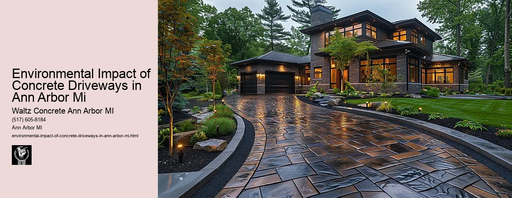

News
Concrete Driveway Installation Ann Arbor Mi
Concrete Driveway Installation Ann Arbor Mi
Choosing the right contractor for installation
Cost of concrete driveway installation in Ann Arbor
Permit requirements for driveway installation in Ann Arbor
The process and timeline of concrete driveway installation
Different types of concrete used in driveways
Maintenance and Repair of Concrete Driveways in Ann Arbor Mi
Maintenance and Repair of Concrete Driveways in Ann Arbor Mi
Preventive maintenance tips for durability
Common causes for concrete driveway damage
Professional companies offering repair services in Ann Arbor
Doityourself versus professional repairs
Costs associated with repairing a concrete driveway
Designs and Styles of Concrete Driveways in Ann Arbor Mi
Designs and Styles of Concrete Driveways in Ann Arbor Mi
Popular design trends for driveways
Considering climate factors when choosing a design or style
Unique customizations available for concrete driveways
Influence of home architecture on driveway design
Stamped stained and decorative options
Environmental Impact of Concrete Driveways in Ann Arbor Mi
Environmental Impact of Concrete Driveways in Ann Arbor Mi
Carbon footprint associated with concrete production
Use of sustainable materials in concrete driveways
Drainage considerations to reduce environmental impact
Local regulations regarding environmentally friendly driveways
Potential use of permeable or porous pavement
Alternatives to Concrete Driveways in Ann Arbor Mi
Alternatives to Concrete Driveways in Ann Arbor Mi
Asphalt driveways and their proscons
Paver stone driveways and their benefitsdrawbacks
Gravel or crushed stone as an alternative option
Comparing costs between different driveway materials
Resinbound surfaces as emerging technology
About Us
Contact Us

Environmental Impact of Concrete Driveways in Ann Arbor Mi
Environmental Impact of Concrete Driveways in Ann Arbor Mi
Title: The Environmental Impact of Concrete Driveways in Ann Arbor, Michigan
The city of Ann Arbor, often referred to as the Tree Town because of its vast green parks and lush forests, also boasts a significant number of concrete driveways. While these driveways contribute to the urban aesthetics and functionality in the city, they also have various environmental implications that are worth discussing.
Concrete is a popular choice for driveways due to its durability and low maintenance requirements. However, its essential to recognize that the production process of concrete is resource-intensive and contributes significantly to carbon dioxide emissions. Globally, cement production a critical component of concrete accounts for approximately 8% of all CO2 emissions.
In addition to global impacts from emissions during production, local environmental effects must be considered. For example, impermeable surfaces such as concrete driveways prevent rainwater from naturally soaking into the ground. This can lead to increased runoff that may carry pollutants into water bodies or overwhelm sewer systems leading to flooding.
However, it's not all doom and gloom when it comes to concrete driveways in Ann Arbor. Several initiatives have been implemented by local residents and businesses aimed at reducing their environmental impact.
For instance, some homeowners have opted for permeable concrete pavers instead of conventional solid slabs for their driveways. These pavers are designed with gaps that allow water to seep through them into the ground beneath - mitigating runoff issues associated with traditional methods.
Moreover, innovations such as carbon capture technology during cement manufacturing are being sought after globally. Even though this technology is still in its early stages of development and adoption might be slow especially at local levels like Ann Arbor; it holds promise in significantly reducing CO2 emissions from cement production moving forward.
Another noteworthy trend is the push towards using recycled materials within concretes such as crushed glass or reclaimed aggregates which helps save on raw material extraction thus conserving natural habitats while also reducing landfill.
In conclusion, while concrete driveways in Ann Arbor have an undeniable environmental impact, they are also a testament to human ingenuity and our collective ability to adapt. With innovative materials and construction methods being developed and implemented, the future of these driveways promises to be not only durable but also more environmentally friendly.
It is important for residents in Ann Arbor and indeed across the globe to stay informed about such advancements and make conscious choices that favor sustainable alternatives. This way, we can continue to enjoy the benefits of sturdy driveways without burdening our environment excessively.
These efforts remind us that every city, including Ann Arbor, plays a crucial role in mitigating climate change. Its through the cumulative effect of individual actions - like choosing green building materials for our homes - that we can make a significant difference on this planet.
Concrete Driveway Installation Ann Arbor Mi
Environmental Impact of Concrete Driveways in Ann Arbor Mi
Frequently Asked Questions
What is the environmental impact of concrete driveways in Ann Arbor, MI?
The production of concrete for driveways contributes to CO2 emissions and energy consumption. Additionally, impermeable concrete driveways can contribute to water runoff that could potentially harm local bodies of water with pollutants.
How does the manufacturing process of concrete affect the environment?
The manufacturing process involves burning limestone and clay at high temperatures which releases large amounts of carbon dioxide into the atmosphere, contributing to global warming.
How do concrete driveways in Ann Arbor, MI contribute to water runoff?
Concrete driveways are not permeable; therefore, they cannot absorb rainwater. This causes water to run off into storm drains carrying oils or other pollutants from vehicles on the driveway which can end up contaminating local watersheds.
Are there any eco-friendly alternatives to traditional concrete for driveways available in Ann Arbor, MI?
Yes. Permeable pavers or pervious concrete are environmentally friendly alternatives as they allow rainwater to seep through into the ground reducing runoff. These materials also help replenish groundwater supplies.
What measures are being taken in Ann Arbor, MI to reduce the environmental impacts caused by traditional concrete driveways?
Local authorities and organizations may encourage residents to use eco-friendly alternatives like permeable pavers and provide information on their benefits. Some may even offer incentives or rebates for homeowners who choose these options.
Environmental Impact of Concrete Driveways in Ann Arbor Mi